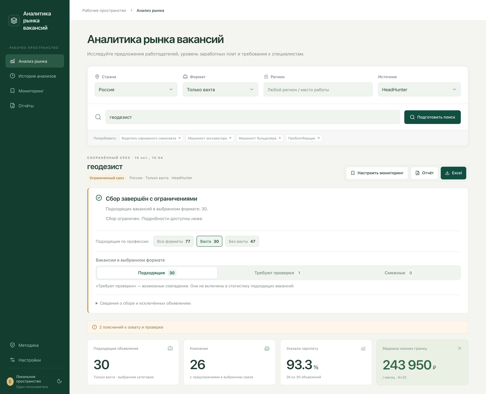
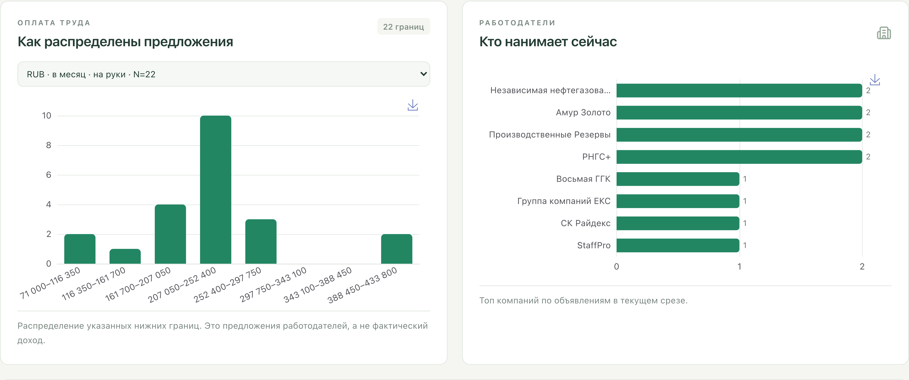
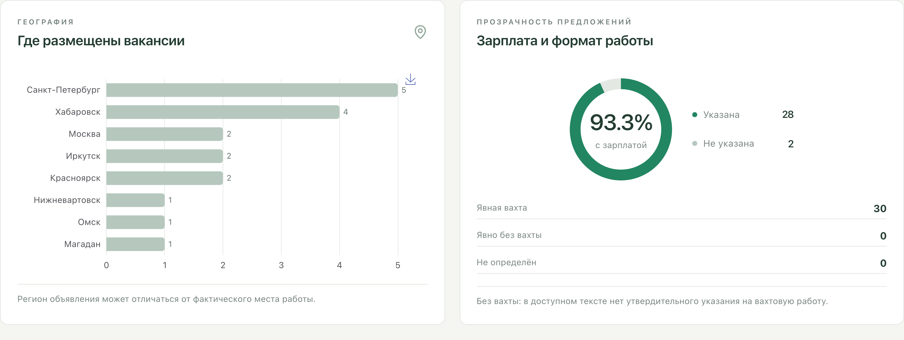
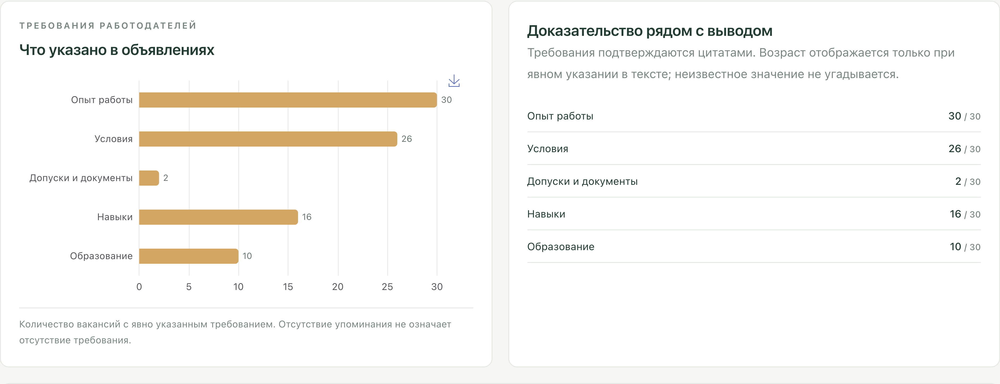
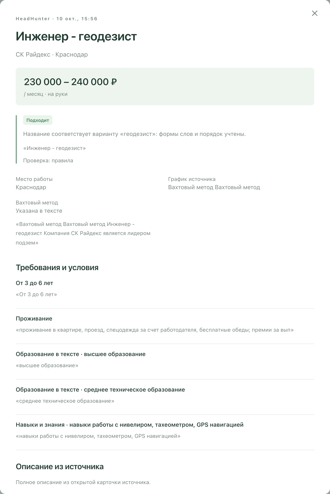
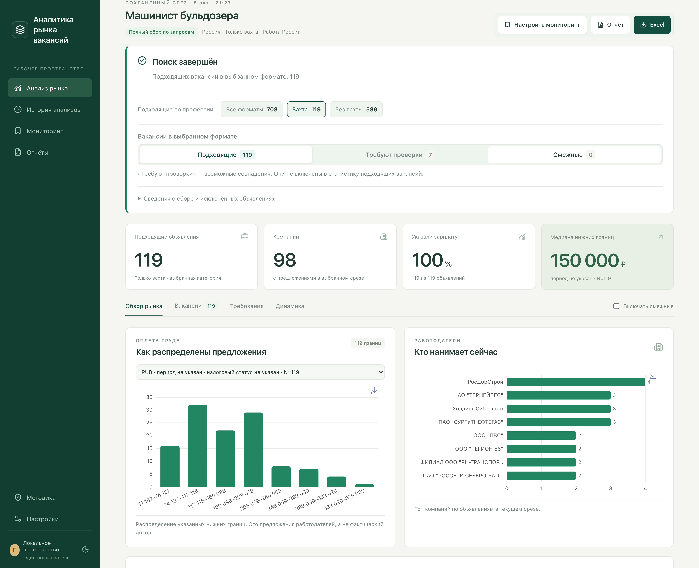

MARKETLENS / АНАЛИТИКА РЫНКА ВАКАНСИЙ
Исследование рынка вакансий перед наймом
MarketLens помогает компании оценить рынок выбранной профессии перед поиском сотрудника: сколько предложений размещают другие работодатели, кто нанимает, какие зарплаты и требования указывает.
Приложение собирает реальные вакансии HeadHunter и «Работы России», отделяет подходящие должности от смежных и показывает аналитику выбранного среза. Проект создан самостоятельно как демоверсия для сценария планирования найма.
Самостоятельная демоверсия · Реальные данные · Локальное приложение

01 / ЗАДАЧА
Понять, с какими предложениями конкурирует новая вакансия
Перед наймом компании нужно изучить предложения других работодателей по той же профессии: количество вакансий, компании, географию, зарплаты, опыт и навыки. Эти данные помогают обсуждать условия будущей вакансии на основании наблюдаемых предложений.
Одинаковая профессия может называться по-разному, а широкая выдача содержит другие должности. Поэтому требовалось объединить расширение поисковых формулировок, проверяемый отбор и анализ в одном процессе. Приложение исследует предложения работодателей; интерес соискателей и количество откликов не измеряются.
02 / РЕШЕНИЕ
Как работает MarketLens
Что показывают графики
Зарплатная гистограмма считает объявления по диапазонам нижних границ: сколько работодатели предлагают «от». Рейтинг компаний показывает число объявлений каждого работодателя в текущем срезе. Эти показатели описывают предложения, а не фактические доходы или число будущих сотрудников.
Валюты, периоды оплаты и суммы до/после налогов разделены. Средние нижние и верхние границы могут иметь разные N и не образуют единую вилку; середина рассчитывается только для полных вилок. Фильтры по компании, источнику, категории и тексту позволяют сузить исследование без нового сбора.


Требования с проверяемыми основаниями
График требований показывает, в скольких вакансиях явно указаны опыт, образование, навыки, документы или другие поддерживаемые условия. Из формулировки можно перейти к соответствующим объявлениям.
Карточка показывает причину отбора и цитаты из источника. Спорное решение можно уточнить вручную с пояснением. Отсутствие извлечённого требования не означает, что работодатель его не предъявляет.


03 / ИНЖЕНЕРИЯ
Ключевые решения при разработке
Вклад автора — выбор задачи планирования найма, проектирование поиска и аналитики, разграничение роли ИИ и скриптов, разработка с помощью ИИ и проверка результатов. Работа выполнена по собственной инициативе, без заказчика.
04 / РЕЗУЛЬТАТ
Данные для обсуждения условий найма
MarketLens объединяет поиск, отбор, сравнение предложений и проверку оснований. Компания может изучить работодателей и условия в выбранном сегменте, затем сохранить исследование для обсуждения вакансии внутри команды.
В показанном срезе HH по геодезисту — 30 подходящих вахтовых объявлений от 26 компаний; 28 объявлений содержат зарплатные данные. Для «Работы России» сохранён отдельный завершённый сбор машиниста бульдозера от 8 октября: при выбранном вахтовом формате — 119 подходящих объявлений от 98 компаний. Это результаты конкретных поисков и фильтров, а не весь рынок. Измерений влияния на скорость найма или экономию времени нет.

Проверка работоспособности
При подготовке кейса повторно прошли 114 автоматических тестов и production-сборка интерфейса. Проверки охватывают поисковые профили, отбор ролей и специализаций, требования, зарплаты, пагинацию, ограничения источников, историю и экспорт.
Скриншоты сделаны в работающем приложении на копии сохранённой базы. Проверены переключение анализов, графики, требования и карточка вакансии. Новый сбор и новые запросы к Gemini для кейса не выполнялись.
Демоверсия работает локально. Доступность источников и полнота среза ограничивают выводы; возможные межплощадочные повторы отмечаются, но не объединяются автоматически. Точность отбора на независимо размеченном наборе не измерена. Интерфейс приложения русский; кейс подготовлен на RU/EN.
05 / ТЕХНОЛОГИИ